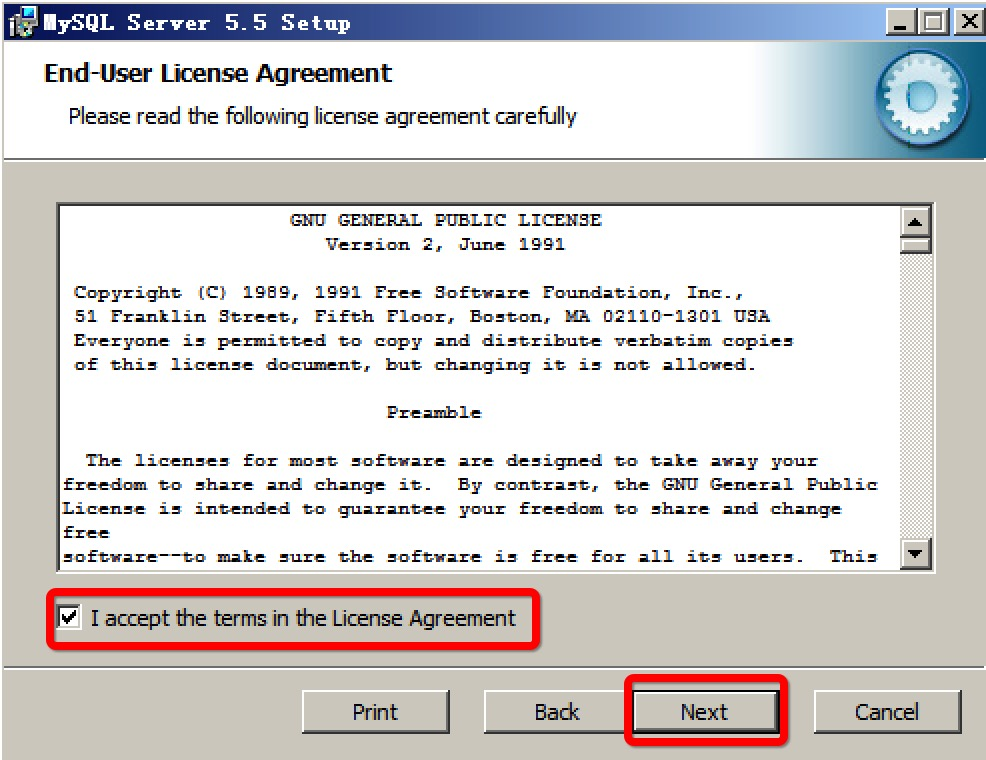
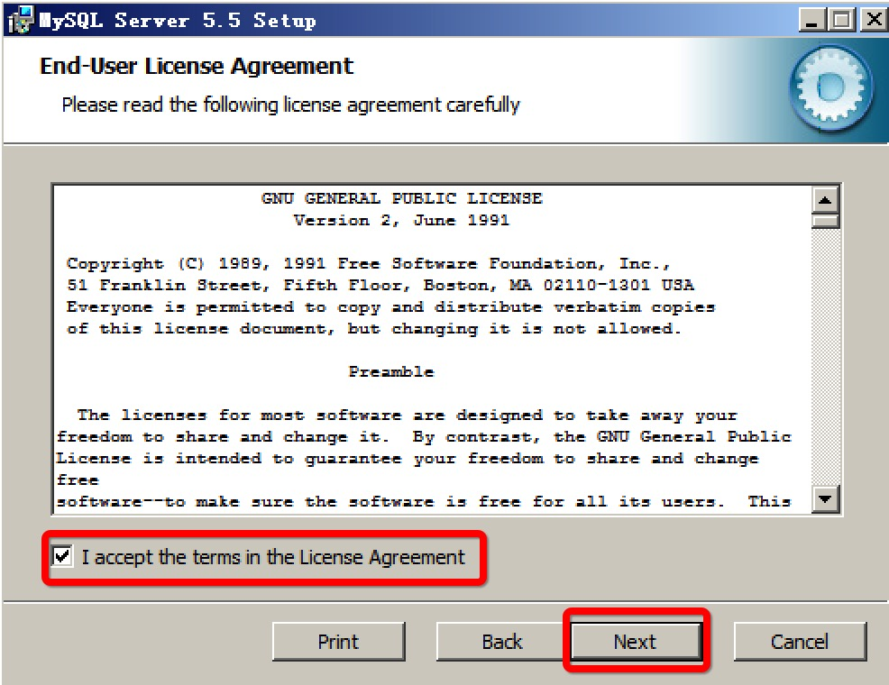
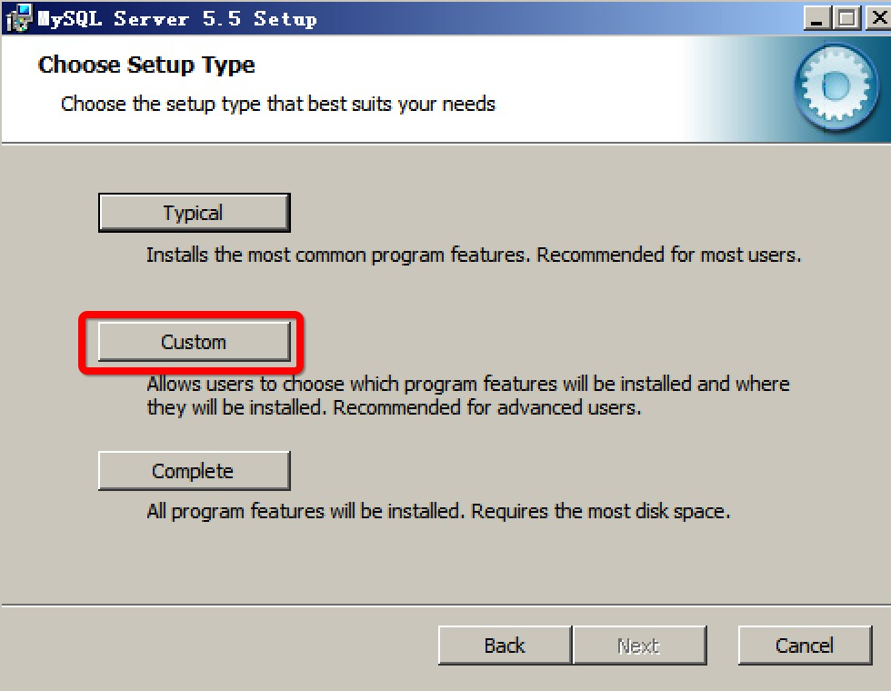
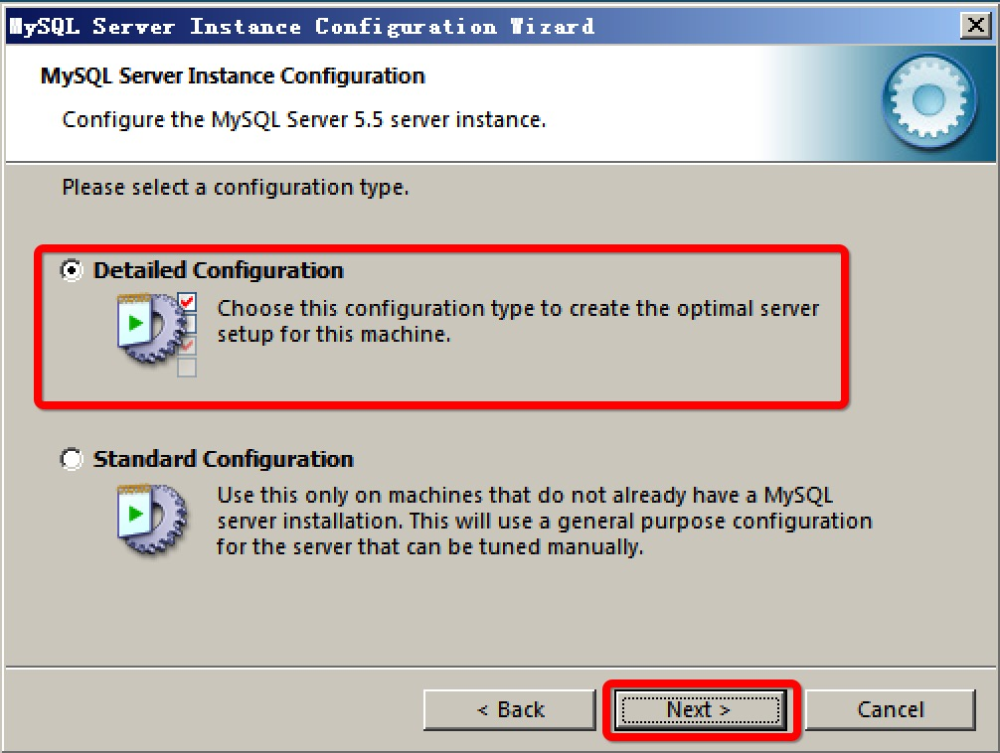
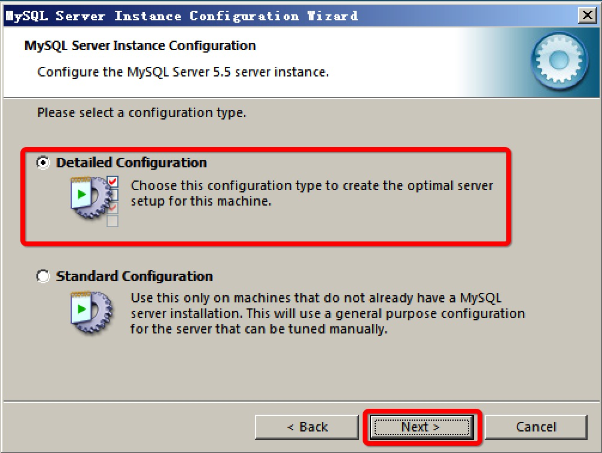
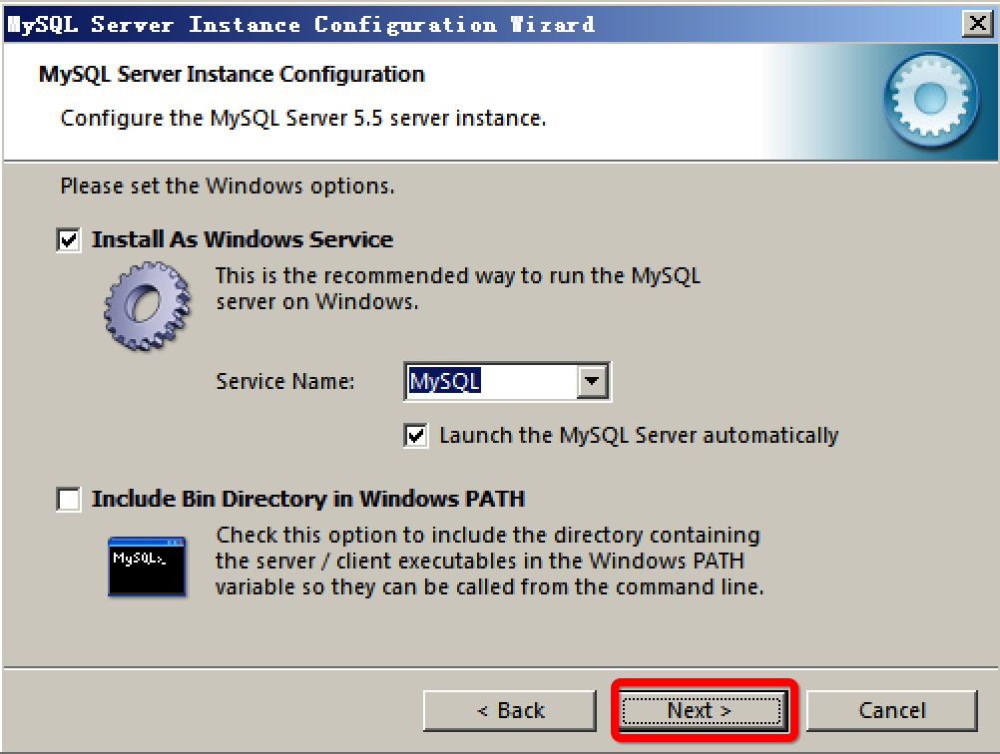

1.1.1 安装 Mysql
1. 下载 Mysql
Mysql 下载地址：http://dev.mysql.com/downloads/
2. Windows 下安装 Mysql
第一步：运行 Mysql 安装包；
 

第二步：选择自定义安装；

第三步：设置安装路径；


第四步：完成安装；


第五步：启动配置向导；
- 选择详细安装；
 
 - 设置安装为 Server Machine

- 设置安装为 Multifunctional Database

- 设置 Mysql Instance

- 设置 Concurrent Connections

- 设置端口

- 设置数据库编码

- 设置数据库服务名 
- 设置超级管理员 root 用户密码
- 完成设置，启动服务